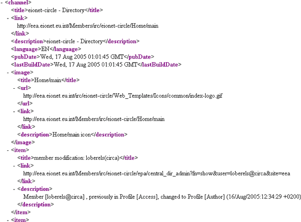

The UNS application can read and extract event data from documents where the data is stored in a structured manner. Such structured data is found in XML dialects such as RSS and Resource Description Framework (RDF).
The characteristic of both of these markup languages is that they are designed to store not only content but also additional information describing the content.
For example, in RSS, the content is stored in channels and the channel’s sub-elements: items.
A channel may contain any number of items which represent an event or a summary of the event and a link leading to the page with the full description of the event.
Each item contains some metadata elements that describe its content, such as[*]:
A typical example of an RSS document is shown in Figure 1:

Figure 1: Example of RSS document
These metadata elements are optional but at least a title or a description must be present in order for the content to be meaningful.
The same principles stand also for RDF type of documents. The only difference in the case of RDF is the syntax of the document itself[†]. Therefore RDF may provide other type of resources than simple RSS items.
UNS in turn, through its Harvester functionality, is able to browse through such structured documents and identify distinct resources. The system will store every recognized item and send a notification with all available metadata to UNS users (see: Create PULL content Channel).
Additionally, it is possible to insert such structured documents into the UNS. This function is available only to event channels that operate under PUSH mode (see: Manage PUSH Channels)
UNS has a capability to handle all current versions of RSS and RDF in a way that is transparent to the user.
UNS allows the Reportnet users to retrieve their events through a RSS feed. Reportnet users can access this feed using any RSS/RDF reader software. This feed serves events collected during the last 5 days. Any RSS reader software could be configured to archive articles so the user will not loose old retrieved events.
[*] This list is not exhaustive. The full RSS specification can be found at http://blogs.law.harvard.edu/tech/rss
[†] Complete specifications for RDF are found at: http://www.w3.org/RDF/